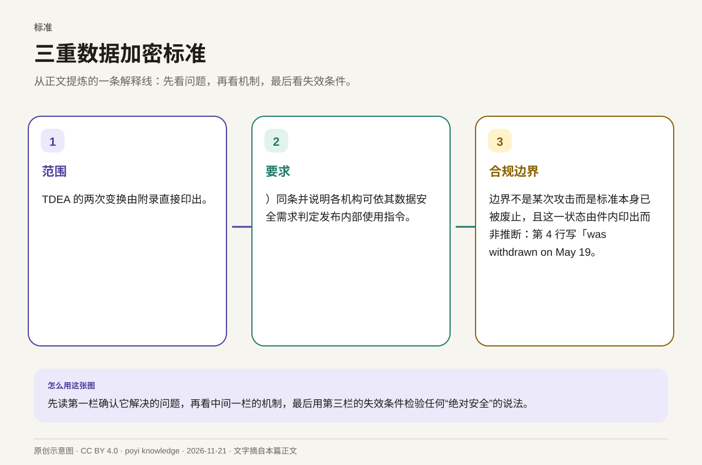
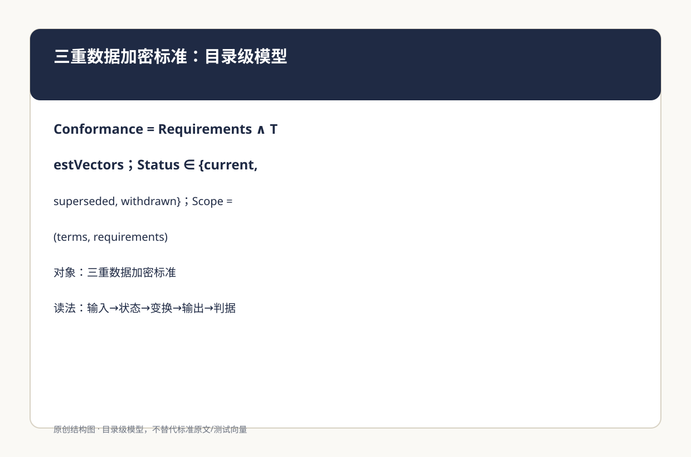

原理与机制
标准：三重数据加密标准（Triple DES）。TDEA 的两次变换由附录直接印出。加密：「1.TDEA encryption operation: the transformation of a 64-bit block I into a 64-bit block O that is defined as follows: O = EK3(DK2(EK1(I))).」（把 64 位块 I 变换为 64 位块 O，定义为 O = EK3(DK2(EK1(I)))。）解密：「O = DK1(EK2(DK3(I)))」。密钥结构在第 48 行印出：「A TDEA key consists of three DES keys, which is also referred to as a key bundle.」（TDEA 密钥由三个 DES 密钥组成，也称为密钥束。）同行并说明单个 DES 密钥为 64 位、其中 56 位由算法直接使用、其余 8 位用于奇偶校验。公式的括号与下标按抽取件原样引用，未重排。

为什么重要
设计选择由第 371 行的三个密钥选项印出：「Keying Option 1: K1, K2 and K3 are independent keys」（三个密钥相互独立）、「Keying Option 2: K1 and K2 are independent keys and K3 = K1」（K1 与 K2 独立而 K3 = K1）、「Keying Option 3: K1 = K2 = K3」（三者相同）。同段给出向后兼容的条件，第 373 行印出其结果：「an encrypted plaintext computed using a TDEA mode of operation can be decrypted correctly by a corresponding single DES mode of operation.」（用 TDEA 模式算出的加密明文可被对应的单 DES 模式正确解密。）因此三选项与兼容性是同一设计取舍的两面，该条目只陈述件内印出的选项与条件，不另行推断各选项的强度数值。
应用与实例
适用范围由第 12 条自己印出：「It applies to all Federal agencies, contractors of Federal agencies, or other organizations that process information (using a computer or telecommunications system) on behalf of the Federal Government to accomplish a Federal function.」（适用于所有联邦机构、其承包商，以及代表联邦政府完成联邦职能而处理信息的其他组织。）同条并说明各机构可依其数据安全需求判定发布内部使用指令。因此本行的用途陈述限于该标准自述的强制适用对象，不扩展为一般商业部署建议；具体的 TDEA 工作实例在成员行 algorithm--3des 与 algorithm--des。

边界与攻击面
边界不是某次攻击而是标准本身已被废止，且这一状态由件内印出而非推断：第 4 行写「was withdrawn on May 19, 2005 and is provided here only for historical purposes」（于 2005 年 5 月 19 日废止，此处仅供历史目的提供）。同页紧接着给出相关去向：第 6 行指向 SP 800-131A（算法与密钥长度过渡建议），第 7 行指向 SP 800-67 Rev.1（TDEA 分组密码建议）。因此本行明确声明该标准已废止、只作历史文献，不构成任何现行使用建议；计划 V7 要求不得猜测标准是现行还是废止，此处正是引其印出句。
历史与背景
断代坐标全部由件内印出。第 78 行：「This standard became effective July 1977.It was reaffirmed in 1983, 1988, 1993, and 1999.」（本标准于 1977 年 7 月生效，并在 1983、1988、1993 与 1999 年重新确认。）第 42 行的公告头印出「1999 October 25 Announcing the DATA ENCRYPTION STANDARD」。第 4 行给出终点：2005 年 5 月 19 日废止。因此本行陈述的是 1977 生效、四次重新确认、1999-10-25 公告版与 2005 废止这一条印出的时间线，不补充件内未印出的起草过程或竞争细节。
逐步示例与核验
形式模型与复算步骤
[S=\min_i S_i,\quad S_i\in{\text{密钥强度},\text{分组安全},\text{实现安全}}]
三重数据加密标准的公开参数、密钥/随机数与消息；变量说明：S 为综合安全强度；各分量取最小值，不能只看密钥位数。1.读取标准规定的密钥/分组/模式参数。2.按标准表换算等效强度。3.取最弱分量作为系统强度。边界：公式只覆盖已登记的参数与假设；参数取值、标准版本和实现细节仍以来源为准。
参考出处
- Wikipedia search entry for 三重数据加密标准. https://zh.wikipedia.org/w/index.php?search=%E4%B8%89%E9%87%8D%E6%95%B0%E6%8D%AE%E5%8A%A0%E5%AF%86%E6%A0%87%E5%87%86
- Handbook of Applied Cryptography (Menezes, van Oorschot, Vanstone). https://www.cacr.math.uwaterloo.ca/hac/
- NIST FIPS 46-3: Data Encryption Standard. https://csrc.nist.gov/pubs/fips/46-3/final